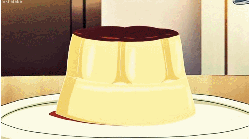

Japanese Custard Purin

What is Japanese Custard Purin?
Japanese Custard Purin is an easy dessert to make that doesn't require any special oriental ingredients :D
Ingredients
Custard Base
- 400 ml of milk
- 3 large eggs
- 60 g of sugar
- 1/2 tsp vanilla essence
Caramel Sauce
- 70 g of sugar
- 50 ml of water
Steps
Caramel Sauce
- Place the sugar and water (for the caramel sauce) in a small saucepan over medium heat until the sugar has dissolved.
- Keep cooking over medium heat till the sugar and water mixture turns into a beautiful amber colour.
- Turn the heat off and pour the sauce into 4 pudding molds.
Custard Base
- Place milk in a jug and microwave for a 1 a minute and a half to heat the milk up.
- Add the egg, sugar and vanilla essence into a mixing bowl and whisk all together.
- Add warm milk into the egg mixture gradually and stir to combine them all together.
- Strain the custard base using a sieve or strainer.
- Divide and pour the custard mixture into the 4 pudding molds (on top of the caramel sauce).
- Place the molds in a shallow flying pan and add about 750-1000ml water over high heat.
- Bring it to boil then turn the heat down to low, wrap the pan lid in a dry towel and put the lid on and leave it for simmer for 3-5 minutes. *1
- Turn the heat off and leave it for 15 minutes( do not open the lid).
- Take the molds out of the frying pan and allow them cool down.
- Refrigerate the molds for at least 1 hour.
- Serve it on a plate.
Recipe from Chopstick Chronicles